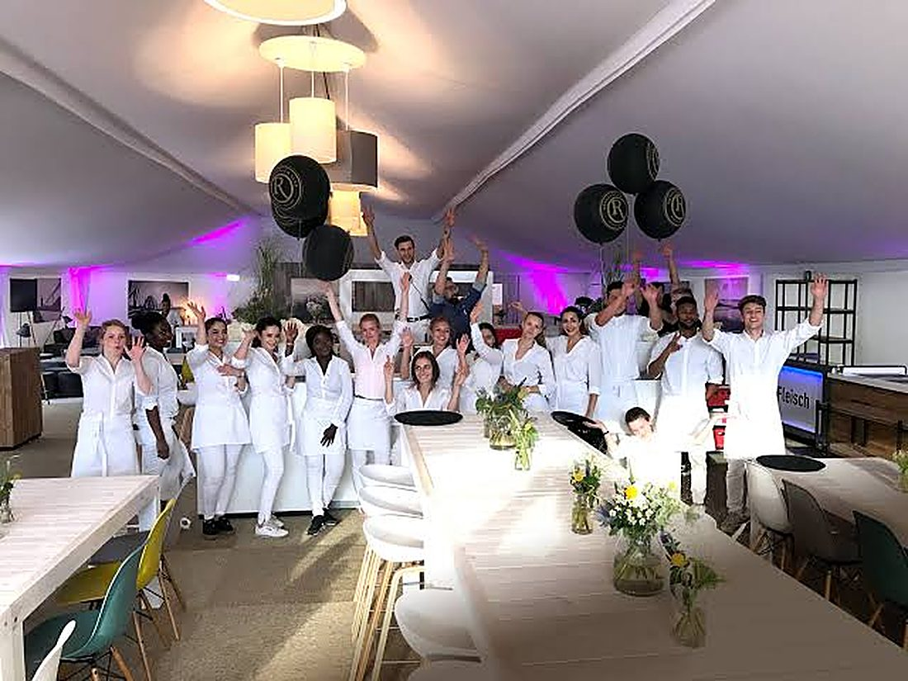
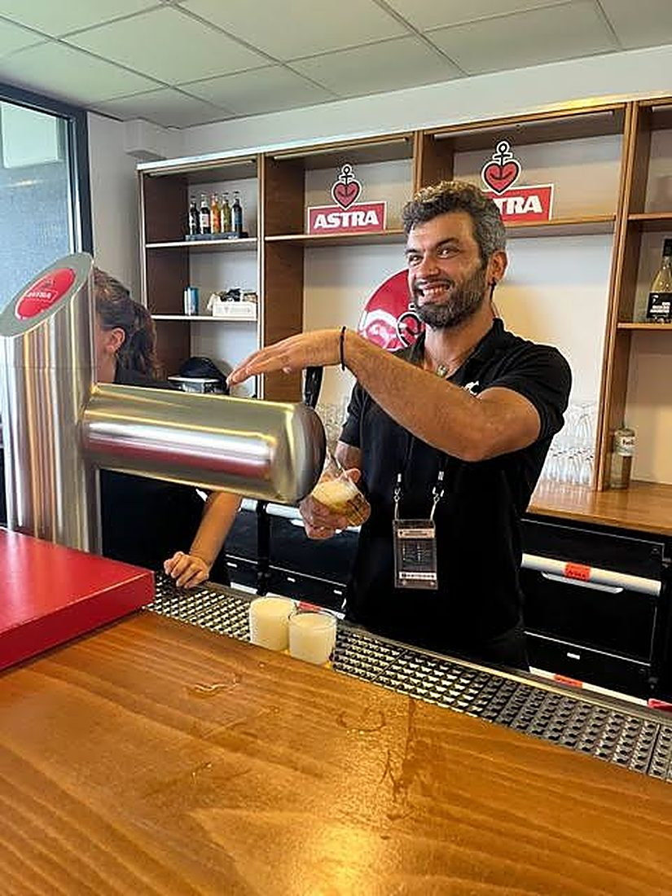

Personal, das Ihr Event trägt.
Bevor der erste Gast kommt, steht unser Team. Service, Sicherheit, Hostessen, Logistik, Fahrservice und Reinigung, aus einem Haus, aus Hamburg.
Wir stellen die Leute, die Ihr Event am Laufen halten.

Das HERM Service Team ist Ihr Ansprechpartner, wenn es um erstklassiges Personal bei einem anstehenden Event geht. Mit über 20 Jahren Erfahrung im Personalmanagement wissen wir, worauf es ankommt und wo es bei einer Veranstaltung erfahrungsgemäß eng wird.
Ob Sicherheit, Gastronomie oder Promotion: unser Team deckt alle Bereiche ab und unterstützt Sie bei Events jeder Art. Ebenso professionell sind unsere Mitarbeiter in Logistik, Fahrservice und Reinigung vertreten. Sie sprechen dabei immer mit demselben Haus, nicht mit sechs verschiedenen Dienstleistern.

Wer mit uns arbeitet
„Maik ist nicht nur ein Freund, sondern auch ein zuverlässiger Partner.“


Lassen Sie uns Ihr Event tragen.
Schreiben Sie uns, was ansteht, wir erstellen Ihnen ein persönliches Angebot. Telefonisch, per E-Mail oder über das Formular.



Sonst per E-Mail oder Formular
Maik Herm
Gertigstraße 12–14 · 22303 Hamburg